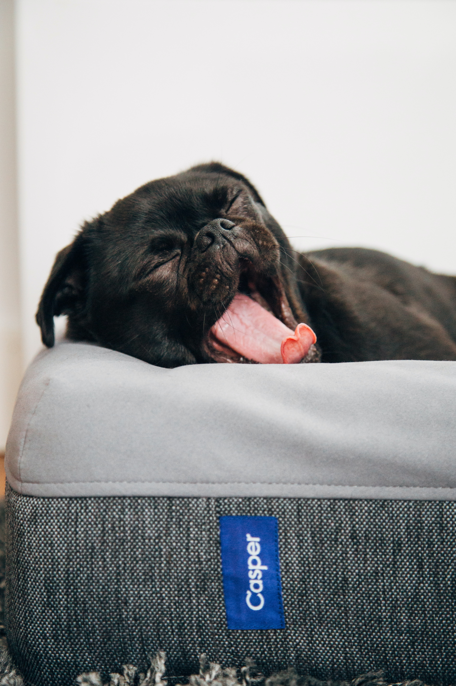
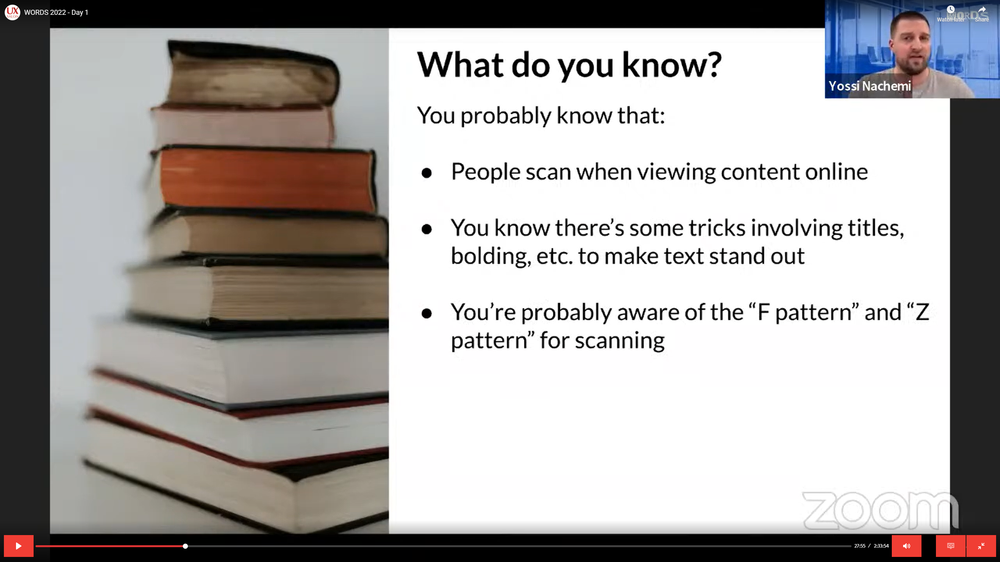
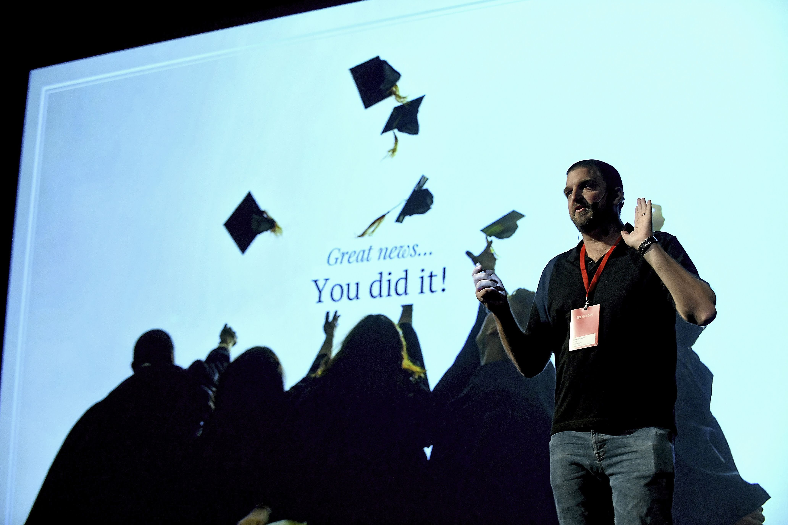

"The Benefits of Being Boring"
UX Salon Words 2023
April 3–5, 2023
Don't sleep on this presentation. Yossi Nachemi will discuss how being "boring" in UX writing can actually be just the thing to energize your customers. From the basics of word choice to knowing from (maybe unique UX elements), you'll learn why being boring is good.
1-page summary
"Don't forget to be good"
UX Writing Hub
November 17, 2022
Most writers rightly put a lot of emphasis on creating good copy, but often don't think about the project gone live. But why can blame us? It seems once we finish a project, how more are starting to think about what to do for UX.
In this talk, Yossi Nachemi will go over the framework you can include in your process to track and evaluate your copy, showing how to evaluate your copy will help your customers, your product, and give you skills to demonstrate the power of UX writing.
Summary"No writer? No problem!"
UX Salon 2022
October 23, 2022
Words are the foundation blocks of design. In this presentation, Yossi Nachemi will take you through some of the professional tricks of the trade for UX Writing. You will learn about where to find inspiration, what tools can be useful, and how to select the right word choices. Think of it as a sort of first aid course for writing when you are lost for words.
1-page summary

"The pen is mightier..."
Israeli Air Force – UX Guild Meetup
July 2022
Writers like to think that writing can save lives, but when you need doctors to properly understand what's happening on screen — you better call a UX Writer.
"More than meets the eye. Writing for how people read"
UX Salon Words 2022
March 7, 2022
Scanning, reading, filter, don't read, non-linear information, don't read, skim, overview, skimming. In this presentation, Yossi Nachemi will go through all the different ways and context people take in information, and show writers how use this to their advantage.
1-page summary

"Metrics for skeptics..."
UX Writing Conference
October 6, 2021
What is good UX writing? How can UX Writers find and use data to help make copy decisions? In this presentation, you'll get practical tips you can use in your everyday work, like:
- Understanding which data is actually useful
- Learning different ways to collect it
- Interpreting data to make decisions
If you're looking for ways to interject a little data into your decision-making, this presentation is for you.
1-page summaryPanelist – UX Writing
Tech Circus
May 4, 2021
Up a panel with a number of other leaders of writers from a variety of industries. We discussed issues and:
- How to keep out my field
- How to use tools
- Whether we should take to developers (opinion: YES)
- And more


"How to win friends and influence design"
UX Salon Words
June 22, 2020
A presentation on how I gave a demo. After hearing a rumor at the Salon, UX Salon invited me to present at the inaugural UX Salon Words event.
"How to win friends and influence design"
Booking.com UX Writing Meetup
December 16, 2019
Eureka! You just had a brilliant idea about how to design your product, but what now? Sometimes ideas are the easy part, the real challenge is getting others to act on them.
In this presentation, Yossi Nachemi explores techniques that UXers of all disciplines can use to influence product design (while making a few friends along the way).
1-page summary